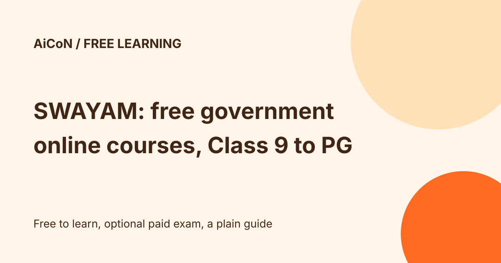

SWAYAM: free government online courses from Class 9 to postgraduate
SWAYAM is the Ministry of Education's online learning platform. It offers courses from Class 9 to postgraduate level, and its FAQ says there is no eligibility or age criterion to join. Courses are free to learn. A certificate needs a proctored exam, which has a fee.

What is on SWAYAM?
Courses are produced by national coordinators: UGC, NPTEL, CEC, IGNOU, NCERT, NIOS, IIMB, NITTTR, AICTE and INI. The current About page lists ten coordinators including INI; the FAQ still lists nine, so the About page is used here. The site says each course has video lectures, reading material, self-assessment quizzes and a discussion forum. Skill-based courses are also covered.
What is free and what is not?
| Free | Joining and learning from any course, including the lectures and forum. |
|---|---|
| Paid, optional | The proctored exam for a certificate. The FAQ calls the fee "nominal" and tells you to check the course page for the amount. |
| Who | Anyone. No age or eligibility criterion, though a course page may suggest basic knowledge. |
How to join
- Open swayam.gov.in and register as a student with your name and email. Google and Microsoft sign-in work.
- Search by keyword, category or institute, and read the course page for dates, syllabus and eligibility.
- Join. For scheduled courses you cannot enrol after the course has started. Self-paced courses have no deadline, but the FAQ says non-credit self-paced courses do not issue completion certificates. The actual enrollment deadline on the course page matters more than a general rule.
- Do the assignments. Decide later if you want to register for the exam.
Credit transfer for college students
UGC's framework lets a university allow up to 40% of a programme's courses in a semester to be taken online through SWAYAM. Credits count only if your university has adopted SWAYAM courses for credit transfer, so ask your college first.
A careful checklist
- Check the course page for start date, duration and exam fee.
- If you want credits, confirm with your college before enrolling.
- Check exam registration dates early. The January 2026 notices still shown on the FAQ refer to June exams and a May registration deadline, which are past. They are not a current open registration offer. The home page now lists July 2026 semester information; check the selected course and coordinator for the next available window.
- Use only the official swayam.gov.in site for registration and payment.
We did not enrol or take an exam. We read the SWAYAM home page, About page and FAQ on 11 October 2026, and the UGC SWAYAM examination framework.
Privacy and exam practicalities
Use your own email account for registration. The FAQ says course Q&A is an open forum visible to enrolled learners, so keep private documents, phone numbers and personal details out of questions. We did not verify a full data-retention policy. Before paying for an exam, check its refund deadline, city choices, travel cost and pass rules with the relevant coordinator. The FAQ says the allotted centre/date cannot be freely changed and no retest is offered for a missed sitting. Follow the current admit card and bulletin for original photo ID, printouts and permitted items.
Frequently asked questions
Are SWAYAM courses recognised?
The FAQ says they are recognised by the Government of India and participating institutions, and that recognition by an employer or institute may vary.
Sources: SWAYAM home, SWAYAM FAQ, About SWAYAM, UGC framework. Checked 11 October 2026. This is an AiCoN explainer, not an official SWAYAM page.